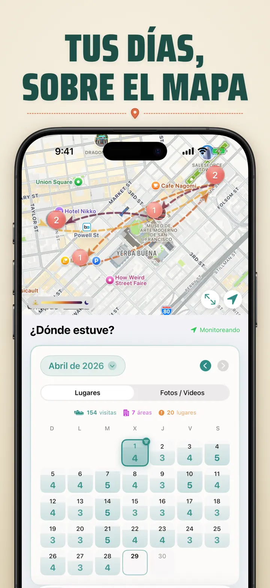
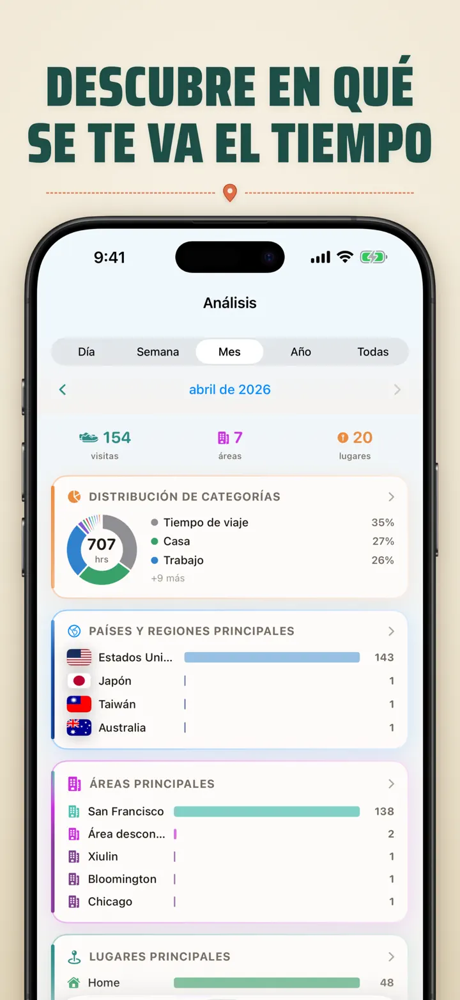
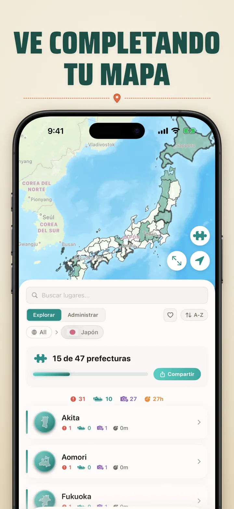
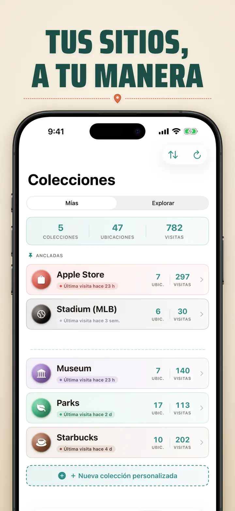
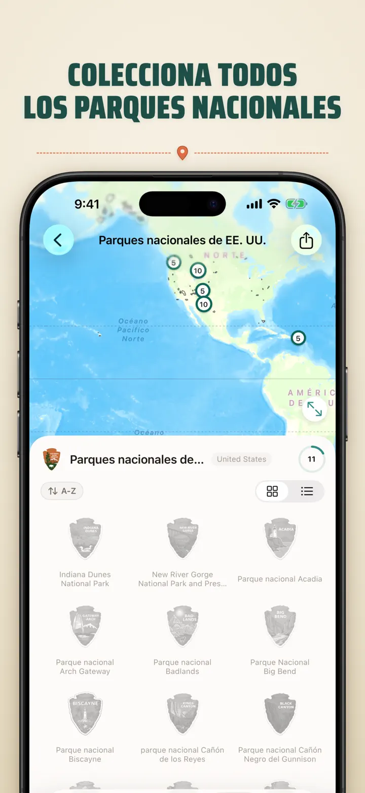
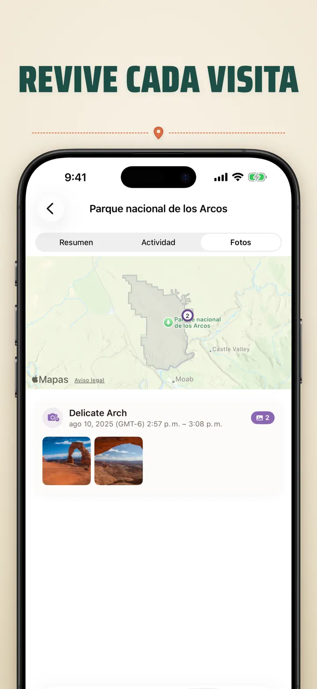

¿Dónde estuve?
Lugares, fotos y mapa
Nuevo: los 103 santuarios Ichinomiya de Japón, cada uno con su insignia tallada. Registro automático de visitas y línea de tiempo privada en tu dispositivo.
Descargar en App Store
Acerca de la app
¿Dónde estuve? — Tu memoria personal de ubicaciones
¿Quieres recordar aquel restaurante del mes pasado? ¿O cuánto tiempo pasas en la oficina frente a casa? ¿Dónde estuve? registra tus visitas y traza una preciosa línea de tiempo de tu día a día.
SEGUIMIENTO AUTOMÁTICO
Sin apuntar nada. La app guarda en silencio tus llegadas y salidas, creando un historial detallado sin que muevas un dedo.
VISTA DE CALENDARIO INTELIGENTE
Consulta tus visitas por día, semana o mes. El calendario muestra de un vistazo cuántas visitas y lugares distintos. Toca cualquier día y verás dónde estuviste.
WIDGETS DE PANTALLA DE INICIO Y BLOQUEO
Mira tus visitas recientes con el widget mediano de la pantalla de inicio. Los de la pantalla de bloqueo muestran tu ubicación actual, un cronómetro de estancia en vivo o las visitas de hoy — toca cualquiera para abrir la app.
LUGARES ORGANIZADOS
Las ubicaciones se agrupan por comunidad y ciudad. Asigna categorías como Casa, Trabajo, Gimnasio o Cafetería. Crea las tuyas con iconos y colores.
ANÁLISIS POTENTE
Descubre patrones de tu vida:
- Tiempo repartido por categorías
- Tus lugares favoritos
- Análisis del ritmo semanal
- Tendencias de frecuencia
- Duración de estancias por lugar — por día, semana, mes o año
COLECCIÓN DE REGIONES POR PAÍS
¡Tus viajes, en un puzle! Mira cuántas comunidades, estados o provincias has visitado en cada país. Comparte el progreso como imagen.
PROGRESO EN PARQUES NACIONALES
¡A la aventura! Registra tus visitas a parques nacionales junto a tus ubicaciones diarias.
100 CASTILLOS FAMOSOS DE JAPÓN
¿De viaje por Japón? Una colección integrada registra tus visitas a los 100 castillos famosos del país. Búscala en Colecciones → Explorar → Japón.
COLECCIONES PERSONALIZADAS
Apple Stores, museos, cervecerías, librerías — lo que quieras. Define palabras clave y se llena sola. Añade o quita a mano. Cada una con recuento, historial y mapa.
IMPORTA TU HISTORIAL DE UBICACIONES
¿Vienes de otra app? Llévate todo tu historial — el formato se detecta automáticamente, las exportaciones grandes no son problema y verás una vista previa antes de importar nada:
- Google Timeline (exportación de Google Maps o Google Takeout)
- Arc Timeline (los archivos .json mensuales que exportas desde Arc)
- Moves (copia de ProtoGeo / Facebook Moves)
GESTIÓN EN MASA
Controla todas tus ubicaciones desde un solo sitio. Busca, ordena y filtra. Selecciona varias para clasificarlas o borrarlas a la vez.
LA PRIVACIDAD, LO PRIMERO
Tus datos de ubicación se quedan en tu dispositivo. Sin cuentas. Sin servidores. Tus movimientos son cosa tuya.
IDEAL PARA:
- Controlar horarios y lugares de trabajo
- Recordar restaurantes y tiendas que has visitado
- Analizar tu rutina diaria
- Llevar un diario de viajes y fichar parques nacionales
- Informes de gastos y kilometraje
- Entender cómo repartes tu tiempo
CARACTERÍSTICAS:
- Detección automática de llegada y salida
- Vista de calendario con línea de tiempo diaria
- Widgets de pantalla de inicio y bloqueo con enlaces directos
- Agrupación por comunidad y ciudad
- Categorías personalizadas con iconos y colores
- Sugerencias inteligentes desde Apple Maps
- Historial detallado con duración
- Duración de estancias por lugar (día/semana/mes/año)
- Panel de análisis con estadísticas
- Búsqueda y filtrado
- Regiones por país con imagen de puzle
- Seguimiento del progreso en parques nacionales
- Colección integrada de los 100 castillos famosos de Japón
- Colecciones personalizadas con palabras clave automáticas, edición manual y estadísticas
- Gestión en masa
- Importación desde Google Timeline, Arc Timeline y Moves
- Exportación
- Sin cuenta
- Diseño centrado en la privacidad
Empieza hoy tu memoria de ubicaciones. Descarga ¿Dónde estuve? y no olvides nunca dónde has estado.
Política de Privacidad: https://masawata.net/privacy-policy.html Términos del Servicio: https://www.apple.com/legal/internet-services/itunes/dev/stdeula/
Capturas de pantalla








¿Dónde estuve?
Nuevo: los 103 santuarios Ichinomiya de Japón, cada uno con su insignia tallada. Registro automático de visitas y línea de tiempo privada en tu dispositivo.
Descargar en App Store